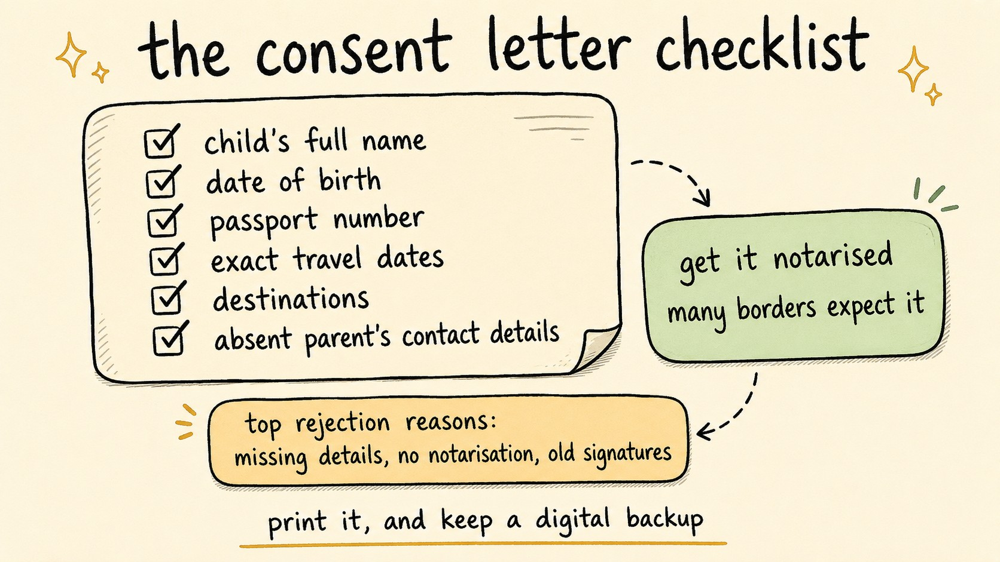

Child Travel Consent Letter: When You Need One and What It Must Say
Travel Document Vault

Key Takeaways
- Requirements vary significantly by country. A letter that works for one destination may not be accepted elsewhere.
- Many countries strongly recommend notarisation or certification by a solicitor or notary public, and some borders or airlines treat it as effectively required even where it is not legally mandatory.
- The letter must include the child's full name, date of birth, passport number, exact travel dates, destinations, and contact details for the absent parent.
- Common rejections come from missing information, lack of notarisation, outdated signatures, or unverifiable contact numbers.
- Carry a printed copy as the primary document, and keep an encrypted digital backup for emergencies.
You arrive at the airline desk with your daughter, ready for a long-awaited trip to see your sister in Toronto. The agent asks for your consent letter. You have one, and it is signed, but it was signed a while ago, before her last passport renewal, and the passport number on the letter no longer matches the passport in your hand. The agent shakes their head. You are not boarding.
That scenario - and thousands like it - happens because child travel consent letters are one of the most commonly misunderstood travel documents. Rules vary widely by country, and a letter that works fine on one trip can fail at the border on the next. Knowing exactly when one is required, what it must contain, and how to keep it valid prevents the most common reasons families get stopped at the border.
Who Actually Needs a Child Travel Consent Letter?
It depends entirely on your destination - there's no global standard, which is why so many families get caught off guard.
A letter is commonly required in these situations:
- A child travels with only one parent. Immigration officers want evidence the absent parent has not objected to the trip.
- A child travels with neither parent. The letter authorises a grandparent, aunt, uncle, or other guardian to travel with the child. Most countries require explicit consent from both parents in this scenario.
- A child travels with one parent whose surname differs from the child's. This raises flags at some borders, particularly for younger children.
- A child is adopted or in foster care. Legal guardianship documents and consent may be required alongside the letter.
Critical caveat: rules vary widely. The Netherlands does not mandate a consent letter even if a child travels with one parent. Canada does not legally require a consent letter, but the Government of Canada strongly recommends one and notes that "failure to produce a letter upon request may result in delays or a refusal to enter or exit a country." South Africa enforces strict documentation rules at its borders. Some countries apply requirements only to children under a certain age. There is no global standard.
Always verify requirements directly with the immigration authority for your specific destination country before travelling. Use the IATA Travel Centre to check entry requirements, or contact your destination country's embassy. If you are unsure, having the letter is better than the alternative: being stopped at check-in or the border.
What the Letter Must Include
A child travel consent letter isn't a casual note - it's a formal document, often notarised, that must contain specific information. Every letter should include:
- Child's full name and date of birth, exactly as printed on the passport.
- Child's passport number.
- Proposed travel dates (departure and expected return).
- Destinations, with all countries the child will visit listed by name.
- Name and relationship of the accompanying adult.
- Contact information for the absent parent: full name, phone number, and email.
- Explicit consent statement ("I/We hereby grant permission for…") signed by the absent parent.
- Signature(s) of the absent parent(s), with date.
- Notarisation or certification, if required by destination.
Write the letter in formal language - avoid vague phrases like "my child can travel whenever". Border officials need to see the absent parent explicitly consents to this specific trip, on these specific dates, to these specific places. For example, you might write: "I, [Full Name], hereby grant permission for my child [Child's Full Name], passport number [number], to travel to [destination(s)] departing on [date] and returning on [date], accompanied by [Travelling Adult's Name and Relationship]."
Some border officers will phone the contact number provided to verify consent. Make sure that number is correct, is answered by the person named, and that they can confirm permission on the call. If you cannot guarantee someone will answer during border hours, list an alternative contact and note it in the letter.
Travel Document Vault stores encrypted copies of every family member's travel documents on-device, including consent letters, passports, and visas. Add the absent parent's contact details once and they travel with the file. Download on the App Store and Google Play.

Notarisation and Official Certification
In most cases, the letter must be notarised, meaning a notary public or solicitor signs and stamps it, verifying the absent parent signed it in their presence. In some jurisdictions, a solicitor's certified signature is acceptable instead.
Countries that typically require notarisation or certification:
- Canada. A consent letter is not legally required, but the Government of Canada strongly recommends one and recommends a notary public witness the signature. Border and airline staff may request it on entry or exit.
- South Africa. Certified by a notary public or attorney. Requirements are strictly enforced.
- Australia. Notarised or certified by a solicitor. Often required even for short trips.
- United Kingdom. Not legally required for outbound travel, but airlines and destination border officers may request one when a child travels with one parent or with a non-parent adult. A solicitor's certified signature is typical.
- United States. Not federally mandated but recommended. Some states recognise notarisation explicitly.
Notary fees vary by country and by notary, and by how quickly you need an appointment, so ask what it will cost and how far ahead you need to book, especially during school holidays. Always confirm your destination's requirements first. The destination country's rules determine whether notarisation is needed at all, not your home country's.
Common Mistakes That Get Letters Rejected
Even well-prepared families make errors that lead to rejection at the border. The most frequent:
- Wrong or unverifiable contact number. If the phone does not connect, or the person who answers cannot verify consent, the letter loses credibility.
- Vague travel dates. Phrases like "summer 2026" are too broad. Use exact departure and return dates.
- Unsigned by the absent parent. A letter signed only by the travelling parent is worthless. Both parents (or legal guardians) must sign if both have legal custody.
- Missing notarisation when required. Some countries will refuse entry if the letter is not officially certified.
- Outdated signature. Letters signed two or more years ago may be questioned. Most authorities prefer signatures within 12 months.
- Wrong passport number or child name. Even small mismatches raise red flags and cause delays.
- Incomplete destination list. If the letter says "Europe" but does not name specific countries, it can be rejected.
- No explicit permission statement. The letter must clearly state the absent parent consents to this trip.
Country-Specific Requirements
| Country | Requirement | Notarisation | Official source |
|---|---|---|---|
| Canada | Strongly recommended (not legally required) | Recommended (notary public) | travel.gc.ca |
| South Africa | Generally required | Yes (certified by notary or attorney) | Department of Home Affairs |
| Australia | Recommended; airlines may require | Yes (solicitor certified) | Smart Traveller |
| United Kingdom | Not legally required; airlines and destination borders may request | Recommended (solicitor) | UKVI |
| United States | Not federally required; varies by state | Varies by state | travel.state.gov |
| European Union | Varies by country | Varies by country | IATA Travel Centre |
| New Zealand | Recommended | Check with immigration | Immigration NZ |
Always verify current requirements directly with the official immigration authority for your destination country. Rules change frequently, and official government websites are your most reliable source. Travel blogs and airline pages are useful for context, but they can lag behind the latest requirements.
Storing and Carrying the Letter
Once the letter is signed and notarised, the next challenge is keeping it safe and accessible during travel. Maintain three versions:
- Original notarised copy, kept at home in a secure location (safe, safety deposit box, or family file).
- Printed travelling copy, carried in your passport wallet or travel document folder.
- Encrypted digital backup, so you can re-print if the travelling copy is lost or damaged.
Digital copies are increasingly accepted, but practices vary. Some border officers still insist on the original, so carrying both printed and digital copies is the safest approach.
If you also organise your family's travel documents centrally, the consent letter sits alongside passports, visas, and vaccination records, ready for any trip.
Final Checklist Before Travel
In the days before departure, run through this checklist:
- Verify requirements with each destination country's immigration authority.
- Confirm all names (including middle names), passport numbers, and dates match across documents.
- Check that all required signatures are present, dated, and match the named parent.
- If notarised, verify the seal, stamp, signature, and date are clear.
- Confirm the absent parent's contact number is correct and they will be available to take verification calls.
- Carry a printed copy in a protective sleeve in your travel documents folder.
- Store an encrypted scanned copy as a digital backup.
- If your child's passport is renewed before travel, obtain a fresh letter showing the new passport number.
- Do not laminate a notarised letter. Lamination can invalidate certification.
Running through this checklist is a lot cheaper than finding out at the desk that your letter no longer matches the passport in your hand.
Before you rely on this: it's a blog, not an official source. Rules and details change, and your situation may be different. We check what we publish, and we can still be wrong or out of date. If something here matters to your plans, confirm it with the authority that handles it before you act.
Frequently Asked Questions
Do I need a child travel consent letter?
It depends on your destination. Requirements vary significantly by country. You typically need one when a child travels with one parent, with neither parent, or with a guardian. Some countries require them for nearly all international travel scenarios; others have no formal requirement at all. Always verify with the immigration authority for your specific destination.
Does a child travel consent letter need to be notarised?
It depends on the destination. Canada strongly recommends notarisation but does not legally require a consent letter at all. South Africa enforces strict documentation rules. Australia and the UK do not legally require notarisation, but airlines and destination borders may request a solicitor-certified signature. Always check the destination country's immigration authority before signing.
What happens if a child travel consent letter is rejected at the border?
Border officers may refuse entry or prevent the child from travelling. In serious cases, this can trigger child protection inquiries if authorities suspect a custody dispute. Common rejection reasons include missing information, lack of notarisation, outdated signatures, wrong passport number, or contact details that cannot be verified by phone.
How long is a child travel consent letter valid for?
Most authorities consider a letter valid for 12 months from the date it was signed or notarised, though some accept up to 2 to 3 years. Many countries require a fresh letter if the child's passport is renewed before travel. The safest approach is to carry a recently signed version (within 6 to 12 months) and verify validity rules with your destination country before departure.
Can you store a child travel consent letter digitally?
Many countries now accept digital copies on mobile devices or printed from digital files, but practices vary. Some border authorities still insist on the original notarised document. Carry both a printed copy and a secure digital backup accessible from your phone.